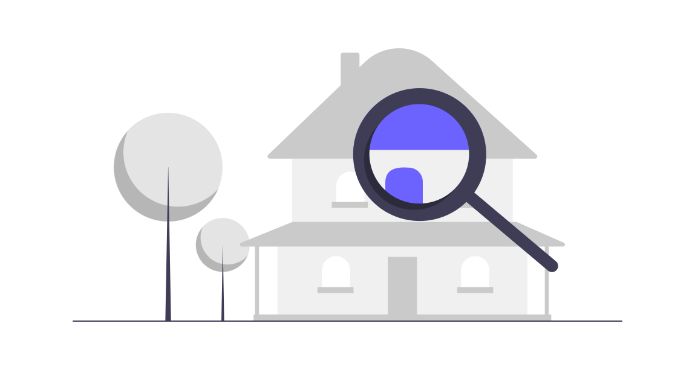

Fashion Retailer | e-commerce
- New leadership team recently installed
- Concerns about the ROI delivered by the digital team
- Changes to products seemed out of line with wider business strategy
- Open questions about the capability of the existing team to communicate a response and turn around performance
- Full review of team capability and digital operations
- Conducted interviews across entire digital team and beyond
- Mapped processes and touch points to show how things worked in practice vs team perception
- Met with third-party providers in development, analytics and optimisation
- Assessed details of external contracts and working practices
- Mapped skills gaps across the team
- Recommended training and education for technology team
- Proposed new hire to bridge a specific skills gap and supported hiring of the role
- Identified key contractual flaws driving undesirable behaviours from third party vendors
- Delivered recommendations for improved communication and ways of working

- £120m turnover
- 1,000+ employees
"This was exactly what we needed. A very clear diagnosis, and well-articulated actions we could immediately apply."
Ground Hazard Risk Assessments
- New Private Equity investor
- Slow speed to market was creating commercial pressures
- Multiple release candidates were buggy and failing
- Questions about capability of the development team and quality of the product produced
- Code review and interview with lead developer
- Assessed code delivery practices and processes
- Met with founders and interrogated business, product & technology strategy
- Identified serious issues in code quality and release processes
- Guided the development team to release a reduced-scope version of the product to customers, securing at risk contracts
- Delivered clear, concise actions to the founders around technical risk reduction and how to predictably deliver
- Aligned commercial side of the business around a coherent strategy
- Supported path to an eventual acquisition

- Private Equity backed startup
- Successful exit 18 months after involvement
"Thank you. While it's concerning to be directly faced with these risks, we can finally see a route to market."
Online Travel Agent
- Private Equity Backed travel group, with multiple brands
- Launched update to website, and mobile SEO immediately began to fail
- Organic traffic reduced ~30% overnight
- Development team continually deploying 'fixes' then rolling back in a trial and error manner
- Full review of data and analytics and code changes to understand scale and cause of the issue
- Idetified root cause of the problem and delivered fast remedial action
- Gave an assessment of the mitigation and recovery aproaches employed by the external development team
- Advised on vendor selection and consequences of technology choices
- Organic traffic immediately beagn to recover, quickly reaching previous benchmarks
- Implemented longer-term fixes and select suitable vendors for future support

- Private Equity backed
- £40m turnover
"Reassuring to know exactly what happened and that we're on track to recover."